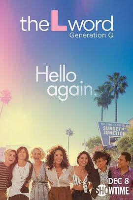

拉字至上：Q世代 第一季 / The L Word: Generation Q Season 1
又名：同言无忌
作品信息
| 导演 | 莎拉·皮亚·安德森 / 斯戴芙·格林 / 艾莉森·利迪-布朗 |
| 编剧 | 艾琳·柴肯 / 马里加·路易斯·瑞恩 / 托马斯·佩奇·麦克比 / 凯茜·格林伯格 |
| 主演 | 詹妮弗·比尔斯 / 凯瑟琳·莫宁 / 蕾莎·海利 / 阿里恩·曼迪 / 杰奎琳·托博尼 / 塞皮德·莫阿菲 / 里奥·盛 / 罗珊妮·扎亚斯 / 杰米·克莱顿 / 史蒂芬妮·艾琳 / 朱利安·爱德华 / 弗雷迪·米亚雷斯 / 拉塔莎·罗斯 / 卡洛斯·李尔 / 奥莉薇·瑟尔比 / 梅赛德丝·马索霍 / 福琼·费姆斯特 / 莱克斯·斯科特·戴维斯 |
| 类型 | 剧情 / 爱情 / 同性 |
| 制片国家/地区 | 美国 |
| 语言 | 英语 |
| 首播 | 2019-12-08(美国) |
| 季数 | 1 |
| 集数 | 8 |
| 单集片长 | 50分钟 |
| IMDb | tt7661384 |
最后一次看到是 2026-08-12T21:11:36+08:00 · 豆瓣原页